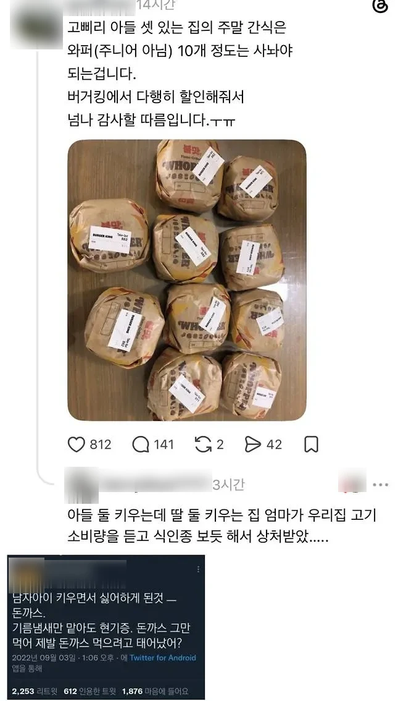

주니어 아니고 와퍼 10개가 주말 간식이라고 함
버거킹 할인 끝나는 날이 이 집 가계부 위기의 날일 듯

주니어 아니고 와퍼 10개가 주말 간식이라고 함
버거킹 할인 끝나는 날이 이 집 가계부 위기의 날일 듯
나랑 형 키울 때 아버지가 고기집 한번 갈 때마다 2000년도 초밤인데도 20만원 깨졌다함 당시 대강 1인분에 4-5천원 대였음.. 형 운동 선수 시절이고 나는 뭔지 모르겠는데 그 당시에 대식가였음..
내친구 키작은 뚱뚱한애였는데 중3 여름방학끝나고 살 다빠지고 180까지 커옴ㅋㅋㅋ
가족마다 다른가 우리집은 다 큰데도 별로안먹음
형제 둘이 치킨한마리 다 못먹고 피자도 항상 남김
라면도 둘이면 항상 두개 삼겹살집도 머리수+2.3인분정도
3형제라서 식비 오지게 깨짐. 애기때 2000년대 초에다 고깃값 저렴한 대구인데도 고깃집만 가면 20만 넘게 깨짐.
고깃집가서 5명이서 불판 2개 쓴다고 하면 주인 ㅈㄴ 기분 나빠하다가 우리집 굽는거 보면 싱글벙글이었음.
나도 2형제인데 고등학교때 니네가이기나 내가이기나 해보자며 어머니가 삼겹살 통으로된거 13만원인가 주고 사와서
계속줬는데 동생이랑 내가 이겼음
엄마를 이겨먹은 불효자냐 잘먹고 잘 큰 효자냐 헷갈리누
형이랑 나랑 둘다 운동선수를 했었어서 가끔 엄마 얘기 들어보면 밦값때문에 몇번씩 휘청했었다곤 했음, 정육점에서 돼지뼈 11kg를 사다가 아침에 끓여놓으면 다음날 아침엔 없었다고
ㅋㅋㅋㅋㅋㅋㅋㅋㅋ
ㅋㅋㅋㅋㅋㅋ
나 씹멸치였는데 그래도 라면 두개씩 먹었지. ㅋㅋ
피자 라지 한판 / 치킨 한마리 반 / 버거 3개 / 라면 4개
이러고 몸무게가 65를 안 넘었었음 ㅋㅋ
나도 고등학생때 고기 먹으면 삼겹살은 5인분 소고기 4인분은 기본이였음 그래도 176인데 아들 생기고 2차 영유에서 예상키 181 나오는거 보고 무섭더라
아침부터 저녁까지 삼겹살먹음
저게 형제없이 한명이면 한개로 끝날수 있는데
형제가 늘면늘수록 식욕도 같이 커져서
식비가 기하급수적으로 올라감
딸 둘 키우는 4인가족인데
삼겹살 600그램 먹는다는 말에 다들 경악하긴 하더라
그걸로 4명이서 만족해? ㅋㅋ
밥이나 냉면 같이 먹긴 하는데 몇 점 남음
그래서 4인가족 일반 고깃집가면 10만원 미만임.
부부가 소주 한 2병 마시면 10만원쯤..
600이면 딱 2낀데
저게진짠가싶은데 ㅅㅂ진짜임 ㅋㅋㅋ 쇠도씹어먹을나이라는게 뭔지알게됨
버거킹 ㅈ같아서 안쓰게 되는 이유가 점포마다 달라서 할인 쿠폰 되는 곳있고 안되는 곳있고 지 멋대로임.
제육, 돈까스, 버거, 불고기 피자
지금은 못먹음ㅋ
테이썰만 들어도 양푼에 밥먹고 냉면그릇이 국그릇인거 보면 어우..
친구아들이 축구하는 중학생인데
삼겹살 혼자 2근 먹는다더라
그나마 군것질은 잘 안하는데 가끔 꽂히는건 있다고....
두쫀쿠에 꽂혔을 때 한달 간식비가 40만원 넘게 나온적 있다고.... (간식 사먹으라고 카드주는데 그달에 40만원 나와서 영수증 가져와 보라고 했더니 다 두쫀쿠가게였다고함)
이근.....
이거맞는게 우리형 아들셋이고 4드론해서 애들 중고딩인데 치킨먹을려면10마넌이상듬 먹성조땜..
나도 고딩때 혼자서 치킨한마리 + 피자 라지한판은 간식으로 먹었음 지금은 치킨 반마리도 혼자못먹음 ㅠ
두근은 1.2kg데...진짜로라면 5개??? 몇키론데지금